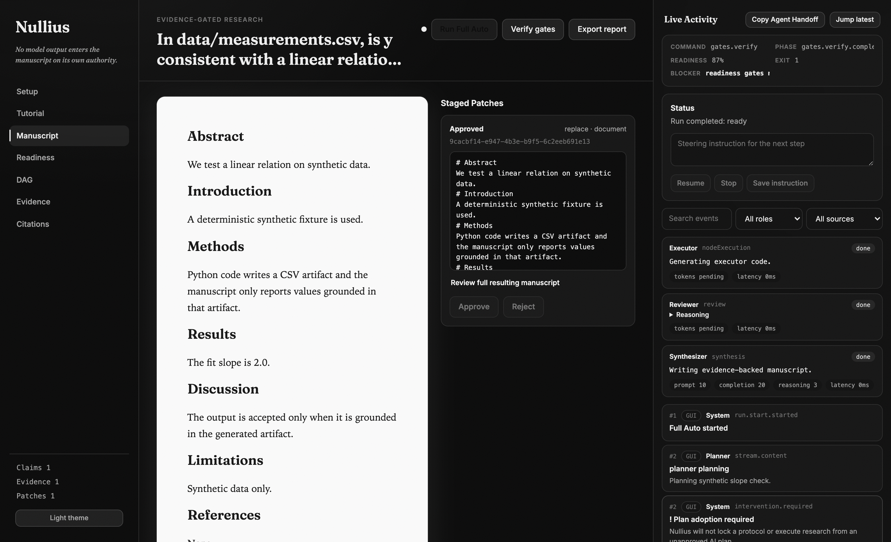
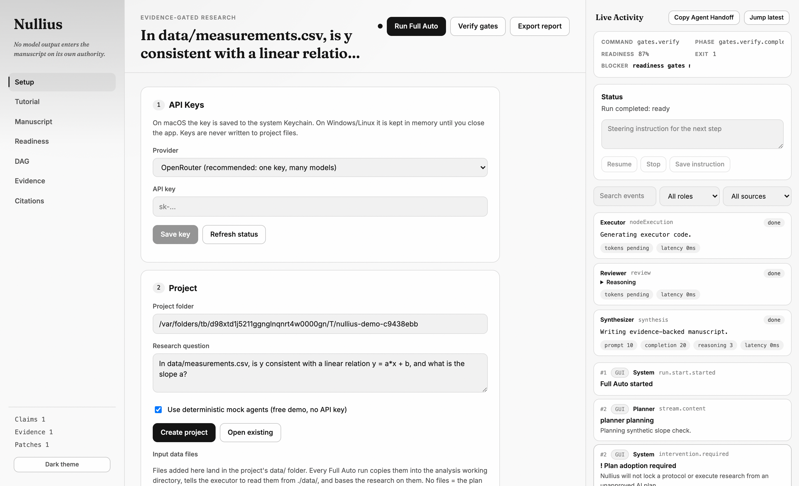

Nullius in verba — take nobody's word for it.
Asked directly, gpt-4o-mini reported a regression slope of 1.9450 (truth: 3.0). Through Nullius, the same model produced a sandbox-executed 3.0007 — and its fabricated statistics were blocked at the write boundary.
Point Codex or Claude Code at the CLI: nullius verify --json exits 0 only when every claim is traceable. Research gets the same red/green loop as code.
Runs on your machine; keys stay in the OS keychain; generated code runs in a WebAssembly sandbox with no network. MIT licensed.

